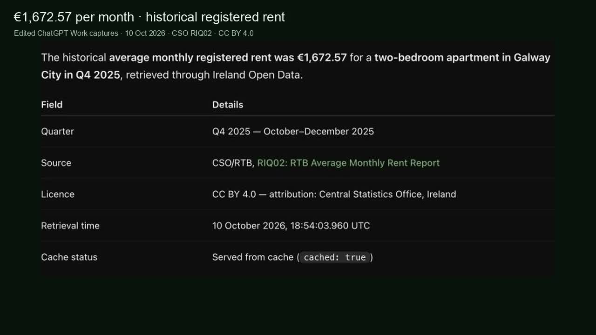

Free · Official sources · Read-only
Ask AI about Ireland.
See the source.
Connect ChatGPT, Claude or Copilot to official Irish public data. Every answer shows its source.
No sign-up. No API key. Open source and free.

35-second edited demo · Silent with captions · Cached CSO data
Works with ChatGPT, Claude, Copilot, Cursor, VS Code, Codex and more.
Agent setup guideTry it now. No install.
Pick a question and press Run live query. This page asks the real service, so you see exactly what your AI would get back, with its source.
Set it up in 30 seconds.
Pick the app you use, paste one web address, then ask a question about Ireland. No account, password or key.
- Pick your app from the tabs below.
- Paste the address or run the one command shown.
- Ask about Ireland and check the cited source.
The address https://mcp.irishopendata.ie/mcp
Use a coding agent? Give it one setup request
Connect with Codex
Run this command, then start a new session and ask Codex to call ireland_catalogue. For other clients, read the installation guide.
codex mcp add ireland --url https://mcp.irishopendata.ie/mcpHow it works.
Your assistant writes the answer. Ireland MCP fetches the public data behind it and says where it came from.
- 1
You ask
Start with a question about Ireland in your connected assistant.
“What is the current wind share on the grid?” - 2
It looks up official data
Your assistant finds the right public source and asks it for the figures.
CSO, Met Éireann, Irish Rail and many more - 3
You get the answer and the source
Each result names the publisher, the licence and when it was fetched, so you can check it.
Answer + link to the source
Publishers update on their own schedules. “Fetched” time is when we got the data, not when it was published. See what’s working now.
Built to be checked.
AI can get things wrong. Ireland MCP makes it easy to see where every figure came from.
Official public sources
Data comes straight from publishers such as the CSO, Met Éireann, the Oireachtas and Irish Rail, under their open licences.
Read-only
It only looks things up. It cannot change, submit or delete anything, and it never asks for your accounts.
Private by design
No sign-up. We never log your search terms or the results. The service records which tools and sources are used and how they performed, with no personal data. Privacy details.
Open source
Every line is public under the MIT licence. Run your own copy, or read the code on GitHub.
Let your coding agent
make the connection.
Paste this request into Codex, Claude Code, or your coding agent. It can read the setup guide, add the server, and check that it works. No account or API key is needed for the public server.
- Read the guide
- Add the server
- Check the connection
Your app must allow MCP configuration changes. Some apps need a new session before the tools become available.
Your setup request
Install Ireland MCP for this coding agent. Read https://irishopendata.ie/AGENTS.md and use the instructions for this client. Connect the read-only Streamable HTTP server at https://mcp.irishopendata.ie/mcp with no authentication. Preserve all existing servers and settings. Reuse an existing Ireland connection if it already matches. After setup, call ireland_catalogue and report the result. If a new session or user action is needed, state the exact next step. Do not claim the connection works until a tool call succeeds.Where the answers come from.
Browse every source by subject. Each one shows who publishes it, its licence and a question you could ask. Each publisher sets the terms for its own data.
Beta · Off on this server
Irish law and your rights.
An early pilot that finds Irish employment law and quotes it with links. Today it covers only annual leave and working time.
Not legal advice
For your own situation, contact Citizens Information, the Workplace Relations Commission or a solicitor.
- What it reads: two Citizens Information guidance pages, the Organisation of Working Time Act 1997 and the Irish Statute Book list of that Act’s later changes.
- Act text is as passed in 1997. It may not include later amendments, and it cannot tell you whether a law is in force today. Check the cited source and its date.
- Citizens Information currently blocks automated access, so a refresh may only update the Irish Statute Book pages. We will not disguise the pilot as a web browser. Wider coverage needs permission or an official export from the Citizens Information Board. We have asked.
- AI summaries can be wrong. Every answer quotes its sources. Read them.
It is off on the hosted server. Read what the beta covers
Run it yourself (for developers)
In a copy of the code, run npm run legal:sync then npm run legal:serve, or start the main server with LEGAL_ENABLED=true. See the pilot guide.
Questions.
What is MCP?
MCP (Model Context Protocol) is a standard plug that lets AI apps such as ChatGPT, Claude and Copilot use outside tools. Ireland MCP is one of those tools: it lets your assistant look up Irish public data.
Is it free?
Yes. The hosted service is free, with no account or API key. The code is open source under the MIT licence.
Is this an official government service?
No. It is an unofficial community project. It reads data that public bodies publish under open licences, and each answer names that publisher.
Can the answers be wrong?
Yes. Your assistant writes the answer and can misread the data, and publishers can be late or change figures. Each result includes the source link and the time it was fetched, so check them before you rely on a number.
What do you store about me?
No accounts. We never log your search terms or the results. The service records which tools and sources are used and how they performed, with no personal data. This site counts page views without cookies. Read the privacy notice.
Can I run my own copy?
Yes. Run npx -y ireland-mcp on your machine, or deploy it yourself. See the self-hosting guide.
A source is missing. Can I ask for it?
Please do. Request a source on GitHub.
What’s working right now.
We check every source automatically every 30 minutes. Here is the latest result, including anything that is down.